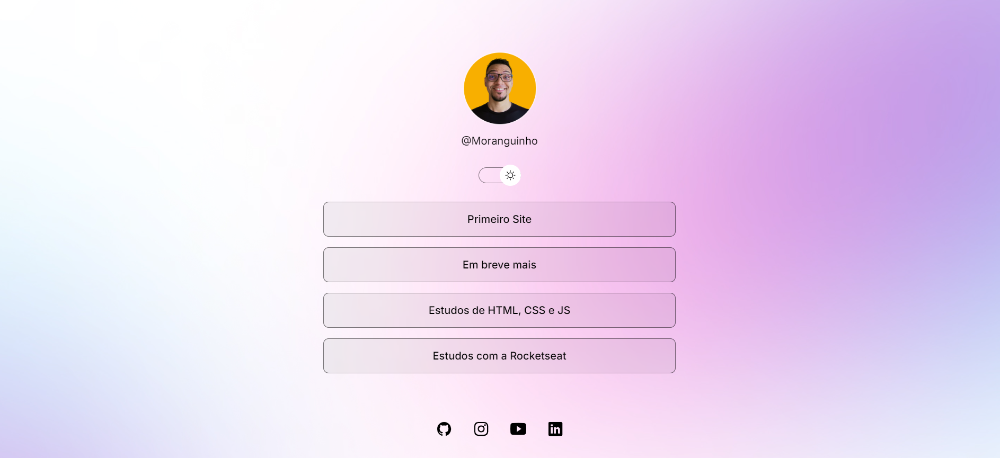
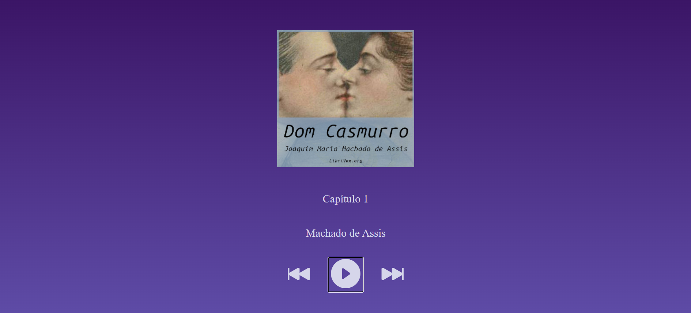

Projetos Pessoais
Primeiro Site Desenvolvido

Esse foi meu primeiro site que desenvolvi durante o curso de HTML, CSS e JS na Rocketseat. É um site de contato pessoal estilo Linktree.Audiobook

Esse foi um site que desenvolvi através de um intensivão de JavaScript do qual eu participei. É um audiobook que contém alguns capítulos de Dom Casmurro.Site Curso Senai
Site desenvolvido através de uma atividade de logística proposta no curso SENAI. Foi meu primeiro site que desenvolvi completamente sozinho.